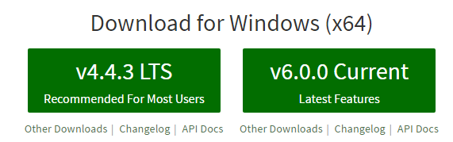
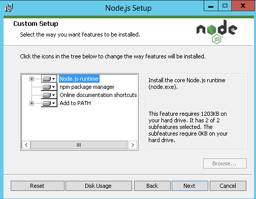
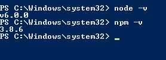

Introduction
I recently installed Visual Studio 2015 Update 2 in order to work in a project, in which, we would like to use a combination of different technologies like SharePoint, React, Node.js, LESS and Gulp.
In my opinion, is good to to use new technologies at the right time, in terms of, learning curve, adoption and maturity. And now, I think is the right time for SharePoint developers to introduce little more technologies like Node.js and Gulp in our projects, which will help us on saving lot of development time.
Node.js
I was quite surprised when I first saw Node.js because even if it is only a JavaScript runtime implemented to run in a server. It has huge success in the development world because JavaScript is the common and shared language between all web developers. Which means that there is a lot of people involved on developing custom libraries and modules. Due to its success, there is a great package ecosystem called NPM (Node Package Manager) to help contributors to publish libraries and developers to use them. See more info here: https://nodejs.org. I recommend to read this book as well:
 Buy this book…
Buy this book…NPM
It is the largest ecosystem of open libraries in the world, doesn’t matter if you are Java, PHP, C#, VB or ASP .Net Developer! That means that there is a los of modules and open libraries already implemented just ready to use them.
As a SharePoint and Web Developer one example that will make you to love NPM free libraries is Gulp, that is a tool that helps you out with several tasks when it comes to web development. It’s often used to do front end tasks like:
- Spinning up a web server (not needed IIS, …)
- Reloading the browser automatically whenever a file is saved
- Using CSS pre-processors like SASS or LESS (https://www.npmjs.com/package/gulp-less)
- Optimizing assets like CSS, JavaScript, and images (https://www.npmjs.com/package/gulp-csso)
Upload files to SharePoint libraries automatically (https://www.npmjs.com/package/gulp-spsave)
- You can see a good article of my colleague Vardhaman explaining how to use here.
YES!! We can have a good way to automatize all the web compilers, bundlers, optimizers and uploaders when we work in SharePoint projects, which is really good in terms of productivity.
Visual Studio 2015 Integration with NPM
By default Visual Studio 2015 knows what NPM is, I mean, Visual Studio 2015 ships with it’s own version of Node.js and NPM. The OOTB version of NPM is located here: C:\Program Files (x86)\Microsoft Visual Studio 14.0\Common7\IDE\Extensions\Microsoft\Web Tools\External\npm\node_modules\npm\bin
{kind=link}
The bad thing here, is that VS uses an OLD version of NPM, and I HIGHLY recommend to use latest version of Node.js and NPM. For me the primary motivator was the path length limitations in Windows. Nested node_modules folders buried 19 levels deep is no fun when you hit the max path length. The latest major version of NPM– version 3.0.x and above – creates a flat store of packages.
Using native VS 2015 Update 2 NPM version
{kind=link}
Using NPM 3.8.6 downloaded from nodejs.org (installed via Node.js executable)
{kind=link}
Thanks Fran for helping me on this!
Upgrade NPM in Visual Studio 2015
Install in your development environment the latest version of Node.js that includes NPM: https://nodejs.org. In my case (May 2016) it is v6.0.0.  Check that NPM is installed as well:  After install it, you can see the version for both tools, just typing: 
Now change “Locations of External Tools” configurations in VS 2015 in order to tell VS to use the latest version of NPM: Configure it in Options > Project and Solutions > External Web Tools
Just add a new entry and move it to the top. NPM is located in the Node.js install directory:
Note may need to restart Visual Studio for the tooling paths to be picked up.
{kind=link}
{kind=link}
{kind=link}
{kind=link}
How can we check our VS 2015 is using version 3.8.6
VS 2015 automatically runs NPM every time we save changes in the package.json file at the root folder of our project (SharePoint project as well). Try to crate package.json in your project root directory, save it and you will see in the output called “Bower/npm”:
{kind=link}
Here an example of package.json file:
You also can see how “node_modules“ folder has been created in your project folder:
{kind=link}
Conclusion
If you are using NPM version 3.X.X then you should have a flat store of packages in node_modules, which means no more node_modules subdirectories. You should appreciate a improvement on performance,
You don’t need extra configuration to run NPM, the only thing to do is create package.json file in you root directory and when you save it an event is triggered to evaluate using the pre-configured NPM version.
NPM is really good accepted in the development community and you have a lot of information around Internet, just google it!
There are some good articles and courses from John Papa: http://www.johnpapa.net/get-up-and-running-with-node-and-visual-studio/